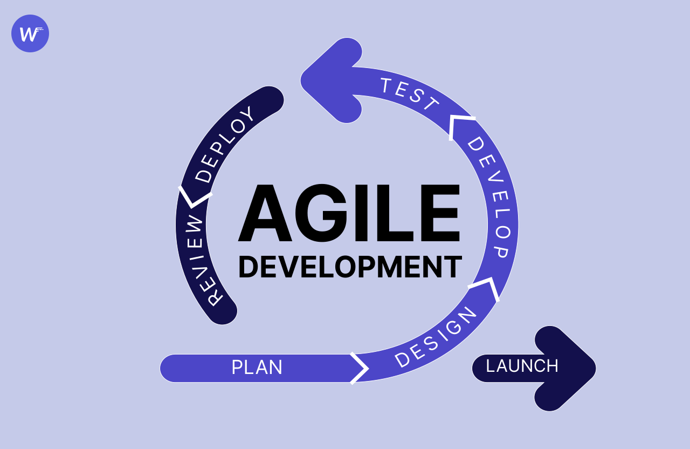

<!-- *********************************************************** 
* Copyright (C) 2022 
* Worktez 
* Author : Abhishek Mishra <am1426620@gmail.com>
* 
* This program is free software; you can redistribute it and/or 
* modify it under the terms of the MIT License 
* 
* 
* This program is distributed in the hope that it will be useful, 
* but WITHOUT ANY WARRANTY; without even the implied warranty of 
* MERCHANTABILITY or FITNESS FOR A PARTICULAR PURPOSE. 
* See the MIT License for more details. 
*********************************************************** -->
<div class="page p-4">
    <div class="row">
        <div class="col"></div>
        <div class="col-md-8 col-12">
            <div class="card p-4">
                <div class="card-body text-center">
                    <h1 class="heading pb-4">
                        Accelerating Your Product Development with <br> Agile Functionalities
                    </h1>
                    <p class="py-2 pb-2">
                        Agile is a project management concept that puts a major emphasis on scalability and teamwork. It is based on the Agile Manifesto, which establishes values and guidelines for software development that put people and interactions, usable software, and customer collaboration ahead of procedures and equipment.
                    </p>
                    <span class="align-middle">
                         
                    </span>
                    <p class="py-2 pt-3">
                        The use of iterative and incremental development, in which requirements and solutions evolve through the collective effort of self-organizing and cross-functional teams, is one of the key principles of Agile. Adaptive planning, evolutionary development, and early delivery are also encouraged, as is constant growth and the ability to adapt to changing circumstances.
                    </p>
                    <p class="py-2">
                        Scrum, Kanban, and Lean are three of the most popular Agile methodologies. Scrum is a project management framework that implements iterations, known as sprints, to deliver continuous product improvements. Kanban is a workflow management method that focuses on observing work flow, limiting work in progress, and making task strategies absolutely clear. Lean is a quality management methodology that was originally developed for manufacturing but has been adapted for software development.
                    </p>
                    <span class="align-middle">
                         
                    </span>
                    <p class="py-2">
                        Agile methodologies have become increasingly popular in recent years, and are shown to be effective in managing complex projects and delivering high-quality software. However, like any methodology, Agile is not a one-size-fits-all solution and it may not be appropriate for all types of projects or organizations.
                    </p>
                    <p class="title py-4">Conclusion</p>
                    <p class="py-2">
                        In summary, Agile is a project management methodology that puts a high value on flexibility, collaboration, and continuous improvement. It is based on the Agile Manifesto and employs iterative and incremental development techniques to produce high-quality software. Scrum, Kanban, and Lean are popular Agile methodologies. It is essential to figure out whether Agile is the best method for your project or organization.
                    </p>
                    <div class="row py-5 pt-5">
                        <div class="col align-middle">
                            <span class="card-title align-top pt-2 px-2"> Content Author: </span>
                            
                            <span class="card-text align-top px-2 text-left" style="display: inline-block;"> Bhavya Singh<br> <span style="font-size: 10px;"> bhavya.singh220@gmail.com</span> <br>
                                <span class="pr-2">
                                    <a href="https://www.linkedin.com/in/bsingh75/" target="_blank"></a>
                                </span>
                            </span>
                        </div>
                        <div class="col align-middle">
                            <span class="card-title align-top pt-2 px-2"> Code Author: </span>
                            
                            <span class="card-text align-top px-2 text-left" style="display: inline-block;"> Abhishek Mishra<br> <span style="font-size: 10px;">am1426620@gmail.com</span> <br>
                                <span class="pr-2">
                                    <a href="https://github.com/abhishek-mishra019" target="_blank"></a>
                                </span>
                                <span class="pr-2">
                                    <a href="https://www.linkedin.com/in/abhishek-mishra019/" target="_blank"></a>
                                </span>
                            </span>
                        </div>
                     </div>
                </div>
              </div>
            
        </div>
        <div class="col"></div>
    </div>
    
    
</div>